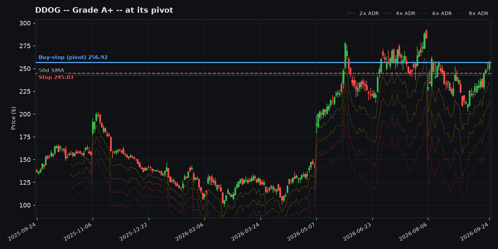
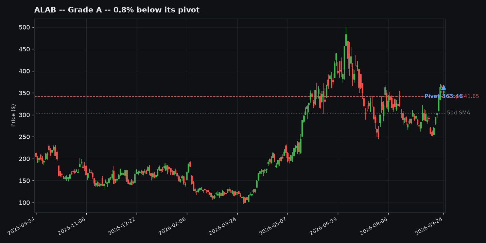
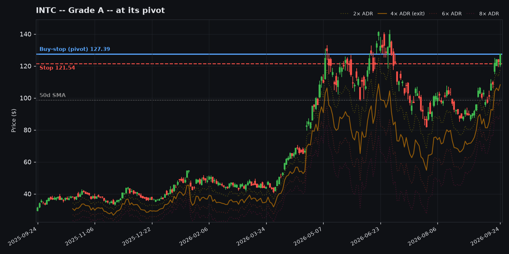
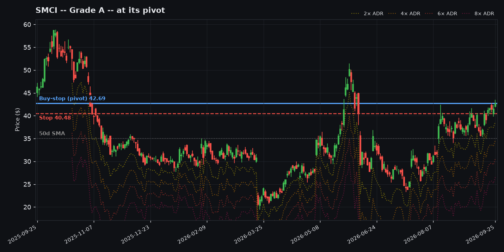
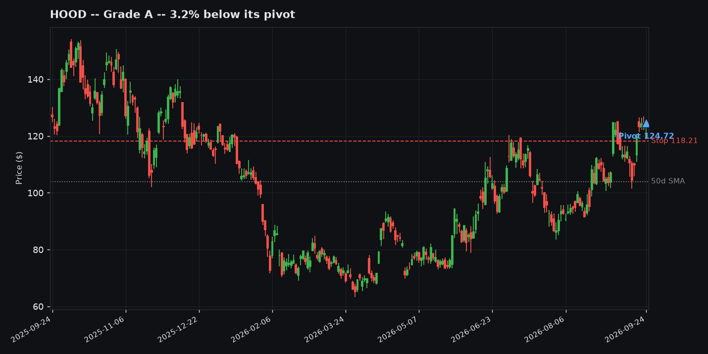
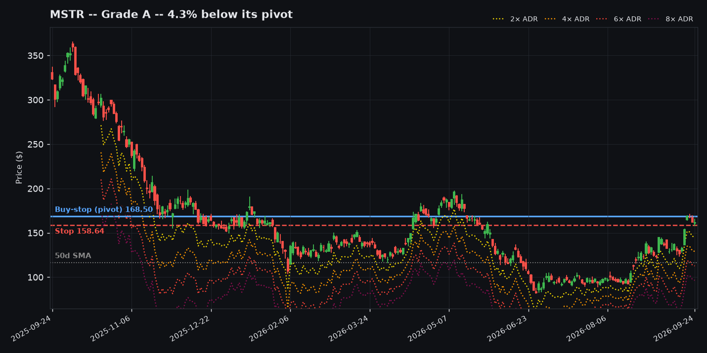

Worth Watching -- Charts
ⓘ Notes
20 tickers as of 2026-09-24, in the same order as the table above. Bars: blue = this ticker, green tick = grinder archetype avg, orange tick = rocket archetype avg. Screener output, not a recommendation.

Communication Services -- Grade A+ -- 0.2% below its pivot
Pivot 243.88 / Stop 229.10 / ADR% 6.1%
Why score +4
- ADR 6.1%: in the 5-7% sweet spot, moves fast enough to run (+2)
- RS 96: top 5% of the market (+1)
- Stage 2: not Stage 1 (0)
- Market regime: defensive (0)
- Market -5.0% in 20 days: not overextended (0)
- 15% below 52-week high: room to run, not yet extended (+1)
Off 52wk high15.1%
Base tightness (10d/50d)0.7x
% above 50-day SMA13.6%
% above 200-day SMA49.0%
ADR%6.1%

Information Technology -- Grade A+ -- 1.9% below its pivot
Pivot 923.12 / Stop 876.83 / ADR% 5.0%
Why score +4
- ADR 5.0%: in the 5-7% sweet spot, moves fast enough to run (+2)
- RS 98: top 5% of the market (+1)
- Stage 2: not Stage 1 (0)
- Market regime: defensive (0)
- Market -5.0% in 20 days: not overextended (0)
- 17% below 52-week high: room to run, not yet extended (+1)
Off 52wk high17.1%
Base tightness (10d/50d)0.8x
% above 50-day SMA7.4%
% above 200-day SMA44.3%
ADR%5.0%

Information Technology -- Grade A+ -- 6.5% below its pivot
Pivot 988.98 / Stop 931.77 / ADR% 5.8%
Why score +4
- ADR 5.8%: in the 5-7% sweet spot, moves fast enough to run (+2)
- RS 98: top 5% of the market (+1)
- Stage 2: not Stage 1 (0)
- Market regime: defensive (0)
- Market -5.0% in 20 days: not overextended (0)
- 12% below 52-week high: room to run, not yet extended (+1)
Off 52wk high11.8%
Base tightness (10d/50d)0.7x
% above 50-day SMA8.7%
% above 200-day SMA27.9%
ADR%5.8%

Information Technology -- Grade A+ -- at its pivot
Pivot 256.92 / Stop 244.43 / ADR% 4.9%
Why score +3
- ADR 4.9%: 4-5%, reasonably fast (+1)
- RS 95: top 5% of the market (+1)
- Stage 2: not Stage 1 (0)
- Market regime: defensive (0)
- Market -5.0% in 20 days: not overextended (0)
- 11% below 52-week high: room to run, not yet extended (+1)
Off 52wk high10.8%
Base tightness (10d/50d)0.9x
% above 50-day SMA5.8%
% above 200-day SMA42.2%
ADR%4.9%

Information Technology -- Grade A+ -- at its pivot
Pivot 63.52 / Stop 59.83 / ADR% 5.8%
Why score +3
- ADR 5.8%: in the 5-7% sweet spot, moves fast enough to run (+2)
- RS 97: top 5% of the market (+1)
- Stage 2: not Stage 1 (0)
- Market regime: defensive (0)
- Market -5.0% in 20 days: not overextended (0)
Off 52wk high0.0%
Base tightness (10d/50d)1.0x
% above 50-day SMA18.8%
% above 200-day SMA78.8%
ADR%5.8%

Information Technology -- Grade A+ -- 0.8% below its pivot
Pivot 363.46 / Stop 341.65 / ADR% 6.0%
Why score +3
- ADR 6.0%: in the 5-7% sweet spot, moves fast enough to run (+2)
- RS 95: top 5% of the market (+1)
- Stage 2: not Stage 1 (0)
- Market regime: defensive (0)
- Market -5.0% in 20 days: not overextended (0)
- 25% below 52-week high: outside the 10-20% zone (0)
Off 52wk high25.4%
Base tightness (10d/50d)0.7x
% above 50-day SMA18.5%
% above 200-day SMA53.2%
ADR%6.0%

Information Technology -- Grade A+ -- 1.1% below its pivot
Pivot 262.49 / Stop 247.40 / ADR% 5.8%
Why score +3
- ADR 5.7%: in the 5-7% sweet spot, moves fast enough to run (+2)
- RS 97: top 5% of the market (+1)
- Stage 2: not Stage 1 (0)
- Market regime: defensive (0)
- Market -5.0% in 20 days: not overextended (0)
Off 52wk high1.1%
Base tightness (10d/50d)1.1x
% above 50-day SMA23.2%
% above 200-day SMA74.4%
ADR%5.8%

Information Technology -- Grade A+ -- 1.3% below its pivot
Pivot 262.36 / Stop 250.38 / ADR% 4.6%
Why score +3
- ADR 4.6%: 4-5%, reasonably fast (+1)
- RS 97: top 5% of the market (+1)
- Stage 2: not Stage 1 (0)
- Market regime: defensive (0)
- Market -5.0% in 20 days: not overextended (0)
- 18% below 52-week high: room to run, not yet extended (+1)
Off 52wk high18.1%
Base tightness (10d/50d)0.7x
% above 50-day SMA18.2%
% above 200-day SMA60.2%
ADR%4.6%

Information Technology -- Grade A+ -- 7.6% below its pivot
Pivot 1887.04 / Stop 1779.33 / ADR% 5.7%
Why score +3
- ADR 5.7%: in the 5-7% sweet spot, moves fast enough to run (+2)
- RS 99: top 5% of the market (+1)
- Stage 2: not Stage 1 (0)
- Market regime: defensive (0)
- Market -5.0% in 20 days: not overextended (0)
Off 52wk high24.9%
Base tightness (10d/50d)0.7x
% above 50-day SMA16.2%
% above 200-day SMA59.4%
ADR%5.7%

Information Technology -- Grade A+ -- 9.8% below its pivot
Pivot 588.40 / Stop 554.57 / ADR% 5.8%
Why score +3
- ADR 5.7%: in the 5-7% sweet spot, moves fast enough to run (+2)
- RS 98: top 5% of the market (+1)
- Stage 2: not Stage 1 (0)
- Market regime: defensive (0)
- Market -5.0% in 20 days: not overextended (0)
Off 52wk high8.9%
Base tightness (10d/50d)0.8x
% above 50-day SMA13.5%
% above 200-day SMA91.3%
ADR%5.8%

Information Technology -- Grade A -- at its pivot
Pivot 127.39 / Stop 121.54 / ADR% 4.6%
Why score +2
- ADR 4.6%: 4-5%, reasonably fast (+1)
- RS 98: top 5% of the market (+1)
- Stage 2: not Stage 1 (0)
- Market regime: defensive (0)
- Market -5.0% in 20 days: not overextended (0)
Off 52wk high9.6%
Base tightness (10d/50d)0.9x
% above 50-day SMA29.3%
% above 200-day SMA61.7%
ADR%4.6%

Information Technology -- Grade A -- 0.0% below its pivot
Pivot 178.74 / Stop 170.83 / ADR% 4.4%
Why score +2
- ADR 4.4%: 4-5%, reasonably fast (+1)
- RS 96: top 5% of the market (+1)
- Stage 2: not Stage 1 (0)
- Market regime: defensive (0)
- Market -5.0% in 20 days: not overextended (0)
Off 52wk high0.0%
Base tightness (10d/50d)1.0x
% above 50-day SMA10.9%
% above 200-day SMA55.0%
ADR%4.4%

Information Technology -- Grade A -- 0.1% below its pivot
Pivot 41.54 / Stop 39.36 / ADR% 5.3%
Why score +2
- ADR 5.3%: in the 5-7% sweet spot, moves fast enough to run (+2)
- RS 89: below the 95 cut-off (0)
- Stage 2: not Stage 1 (0)
- Market regime: defensive (0)
- Market -5.0% in 20 days: not overextended (0)
- 29% below 52-week high: outside the 10-20% zone (0)
Off 52wk high29.3%
Base tightness (10d/50d)0.9x
% above 50-day SMA19.8%
% above 200-day SMA30.7%
ADR%5.3%

Information Technology -- Grade A -- 0.4% below its pivot
Pivot 389.14 / Stop 373.86 / ADR% 3.9%
Why score +2
- ADR 3.9%: average speed (0)
- RS 95: top 5% of the market (+1)
- Stage 2: not Stage 1 (0)
- Market regime: defensive (0)
- Market -5.0% in 20 days: not overextended (0)
- 20% below 52-week high: room to run, not yet extended (+1)
Off 52wk high19.8%
Base tightness (10d/50d)0.6x
% above 50-day SMA5.9%
% above 200-day SMA18.4%
ADR%3.9%

Information Technology -- Grade A -- 0.9% below its pivot
Pivot 393.30 / Stop 373.87 / ADR% 4.9%
Why score +2
- ADR 4.9%: 4-5%, reasonably fast (+1)
- RS 96: top 5% of the market (+1)
- Stage 2: not Stage 1 (0)
- Market regime: defensive (0)
- Market -5.0% in 20 days: not overextended (0)
Off 52wk high1.5%
Base tightness (10d/50d)1.1x
% above 50-day SMA9.6%
% above 200-day SMA60.2%
ADR%4.9%

Information Technology -- Grade A -- 1.4% below its pivot
Pivot 1096.16 / Stop 1053.52 / ADR% 3.9%
Why score +2
- ADR 3.9%: average speed (0)
- RS 99: top 5% of the market (+1)
- Stage 2: not Stage 1 (0)
- Market regime: defensive (0)
- Market -5.0% in 20 days: not overextended (0)
- 11% below 52-week high: room to run, not yet extended (+1)
Off 52wk high10.9%
Base tightness (10d/50d)0.6x
% above 50-day SMA15.3%
% above 200-day SMA64.5%
ADR%3.9%

Financials -- Grade A -- 3.2% below its pivot
Pivot 124.72 / Stop 118.21 / ADR% 5.2%
Why score +2
- ADR 5.2%: in the 5-7% sweet spot, moves fast enough to run (+2)
- RS 83: below the 95 cut-off (0)
- Stage 2: not Stage 1 (0)
- Market regime: defensive (0)
- Market -5.0% in 20 days: not overextended (0)
- 21% below 52-week high: outside the 10-20% zone (0)
Off 52wk high20.8%
Base tightness (10d/50d)0.9x
% above 50-day SMA16.2%
% above 200-day SMA27.6%
ADR%5.2%

Information Technology -- Grade A -- 4.2% below its pivot
Pivot 91.45 / Stop 86.00 / ADR% 6.0%
Why score +2
- ADR 6.0%: in the 5-7% sweet spot, moves fast enough to run (+2)
- RS 89: below the 95 cut-off (0)
- Stage 2: not Stage 1 (0)
- Market regime: defensive (0)
- Market -5.0% in 20 days: not overextended (0)
Off 52wk high4.0%
Base tightness (10d/50d)1.7x
% above 50-day SMA24.6%
% above 200-day SMA35.9%
ADR%6.0%

Information Technology -- Grade A -- 4.3% below its pivot
Pivot 168.50 / Stop 158.64 / ADR% 5.8%
Why score +2
- ADR 5.8%: in the 5-7% sweet spot, moves fast enough to run (+2)
- RS 88: below the 95 cut-off (0)
- Stage 2: not Stage 1 (0)
- Market regime: defensive (0)
- Market -5.0% in 20 days: not overextended (0)
- 55% below 52-week high: outside the 10-20% zone (0)
Off 52wk high55.1%
Base tightness (10d/50d)0.9x
% above 50-day SMA38.9%
% above 200-day SMA18.2%
ADR%5.8%

Information Technology -- Grade A -- 8.8% below its pivot
Pivot 333.20 / Stop 316.61 / ADR% 5.0%
Why score +2
- ADR 5.0%: 4-5%, reasonably fast (+1)
- RS 96: top 5% of the market (+1)
- Stage 2: not Stage 1 (0)
- Market regime: defensive (0)
- Market -5.0% in 20 days: not overextended (0)
- 30% below 52-week high: outside the 10-20% zone (0)
Off 52wk high30.3%
Base tightness (10d/50d)0.9x
% above 50-day SMA16.3%
% above 200-day SMA45.2%
ADR%5.0%